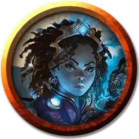

Космотронный взрывоискатель
Cosmotronic Blastseeker
Средний Гуманоид (Любая раса), хаотично-нейтральный

Класс Доспеха 15 (кольчужная рубаха)
Хиты 37 (5к8 + 15)
Скорость 30 футов
| мод | спас | ||
|---|---|---|---|
| СИЛ | 14 | +2 | +2 |
| ЛОВ | 15 | +2 | +4 |
| ТЕЛ | 16 | +3 | +5 |
| мод | спас | ||
|---|---|---|---|
| ИНТ | 18 | +4 | +4 |
| МДР | 9 | −1 | −1 |
| ХАР | 12 | +1 | +1 |
Навыки Восприятие +1, Запугивание +3, Магия +6
Чувства пассивное Восприятие 11
Языки один любой язык (обычно Общий)
Опасность 4 (1100 опыта)
Бонус мастерства +2
Особенности
Усиленное заклинание (3/день). Когда взрывоискатель совершает бросок урона для заклинания, он может перебросить до четырех костей урона. Он должен использовать новые кости.
Врожденное колдовство. Базовой характеристикой взрывоискателя является Интеллект (Сл спасброска от заклинаний 14, +6 к попаданию атаками заклинаниями). Взрывоискатель может накладывать следующие заклинания, не требуя никаких компонентов, кроме своего снаряжения Иззетов, которое не работает для других:
• 3/день каждое: палящий луч [scorching ray], щит [shield], волна грома [thunderwave];
• 2/день: огненный шар [fireball].
Волны хаоса (1/день). Искатель взрыва совершает один бросок атаки, проверку характеристики или спасбросок с преимуществом.
Действия
Боевой молот. . Рукопашная атака оружием: +4 к попаданию, досягаемость 5 фт., одна цель. Попадание: 6 (1к8 + 2) дробящего урона или 7 (1к10 + 2) дробящего урона, если используется двумя руками.
Описание
В то время как химики сосредотачиваются на изобретении новых инструментов, оружия и других устройств для использования гильдией, роль искателя взрыва состоит в том, чтобы заставить эти устройства работать. Несмотря на название, не все такие устройства производят взрывы, но все самые интересные (с точки зрения Иззетов) производят.